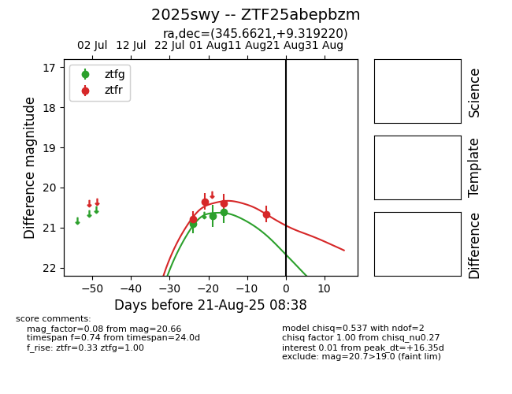

Target 2025swy at 2025-08-21 11:20, see:
FINK: fink-portal.org/ZTF25abepbzm
Lasair: lasair-ztf.lsst.ac.uk/objects/ZTF25abepbzm
ALeRCE: alerce.online/object/ZTF25abepbzm
TNS: wis-tns.org/object/2025swy
YSE: ziggy.ucolick.org/yse/transient_detail/2025swy
alt names
ZTF25abepbzm (ztf,alerce)
2025swy (tns,yse)
coordinates:
equatorial (ra, dec) = (345.6621,+9.31922)
galactic (l, b) = (83.2876,-45.01577)
photometry
last ztfg=20.61, ztfr=20.66
3 ztfg, 4 ztfr detections
